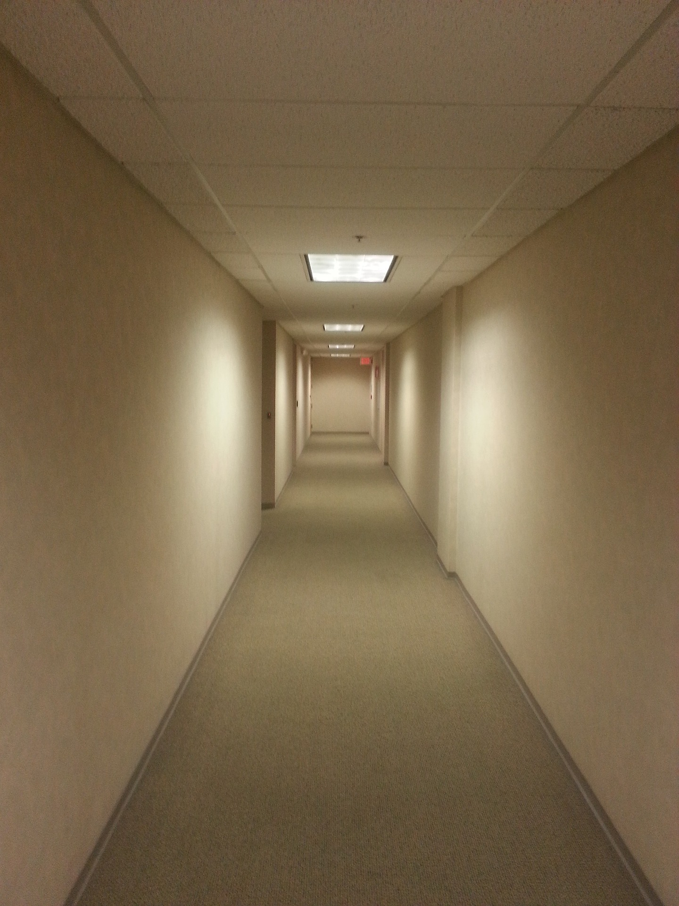

Level 0 (The Backrooms)
0 is an expansive non-Euclidean space, resembling the back rooms of a commercial building. All rooms in Level 0 share the same superficial features, such as worn mono-yellow wallpaper, old moist carpet, scattered electrical outlets, and inconsistently-placed fluorescent lighting. Aside from these common features, no two rooms within the level are identical in layout.
My Thoughts:
I think I can walk for hours in "Level 0" I spend the most time in this level when it's in fanmade video games. The buzzing is calming in a way for me maybe it just helps me clear my mind as I am walking through the Backrooms